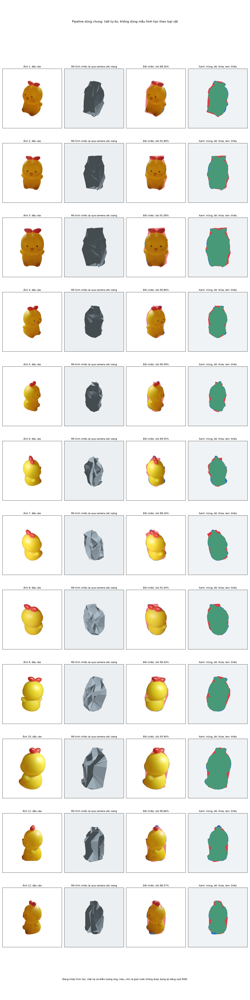
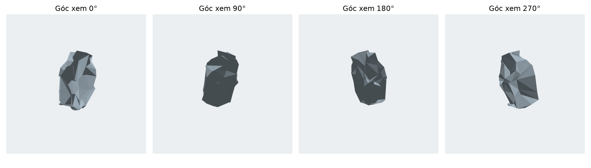
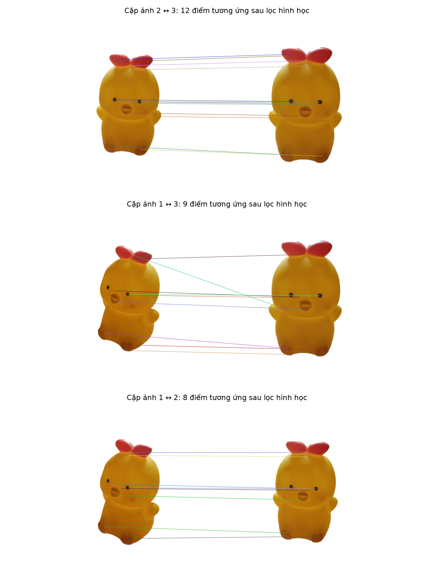

Khởi tạo từ icosphere trung tính; tối ưu từng đỉnh và camera. Không dùng phương trình lon, trụ tròn xoay, mẫu ngôi sao, kích thước vật, camera thật hoặc landmark đặt bằng tay.
Các kernel cost hai chiều, first-hit và vòng Adam dùng chung với bản thử trước. Mask lấy từ nền gần đồng nhất; điểm tương ứng lấy bằng SIFT + lọc hình học.

| Ảnh | IoU khởi tạo | IoU sau tối ưu | Pixel thừa | Pixel thiếu |
|---|---|---|---|---|
| 1 | 82.33% | 88.26% | 2342 | 595 |
| 2 | 47.24% | 91.80% | 1693 | 404 |
| 3 | 50.82% | 91.08% | 2551 | 438 |
| 4 | 71.72% | 90.86% | 1496 | 400 |
| 5 | 71.86% | 90.49% | 1251 | 373 |
| 6 | 82.64% | 89.55% | 1216 | 670 |
| 7 | 80.93% | 89.16% | 1642 | 549 |
| 8 | 78.45% | 91.04% | 1640 | 375 |
| 9 | 79.58% | 90.43% | 2135 | 410 |
| 10 | 72.15% | 93.94% | 1583 | 539 |
| 11 | 70.58% | 90.66% | 1649 | 669 |
| 12 | 77.18% | 88.37% | 1895 | 654 |
GLB · OBJ · PLY · Số đo và camera


IoU chỉ đánh giá vùng vật thể trong ảnh; không chứng minh mặt sau hoặc camera đã đúng. Kết quả hiện tại còn sai/lệch độ sâu khi nhìn từ hướng khác; chưa phải mô hình 3D được xác thực. Hiện chưa tối ưu màu RGB, nhãn in hay giọt nước. Cost lấy mẫu và kiểm tra first-hit tại các điểm ghép chưa chứng minh song ánh trên toàn bộ vùng nhìn thấy.
Thuật toán giả thiết các ảnh có chung một hình học vật thể cứng. Với hai ảnh web này, giả thiết đó và camera thật chưa được xác minh. Tối ưu hiện dùng Adam với cập nhật SO(3); chưa phải hiện thực DCA hay một kết quả bảo đảm hội tụ/duy nhất.
Giả thuyết được chọn: no_axis. Quay 45° (C8) là giả thiết mặc định đã đặt, không phải bậc đối xứng được suy ra từ ảnh. Trục giữ cố định trong lượt tối ưu; phép phạt so với bề mặt và mômen thể tích, không dùng hoán vị đỉnh. Ưu tiên độ gọn toàn cục đã tắt. Giả thuyết phải đạt ngân sách khớp ảnh và dung sai first-hit; nếu không đạt thì giữ mô hình không áp dụng giả thuyết trục. Xem toàn bộ axis_symmetry_selection trong result.json, gồm cả giả thuyết bị loại.
Prior mềm: epsilon = 0.001 sau chuẩn hóa theo pixel. Không có điều kiện cứng buộc sâu bằng ngang hoặc mô hình phải đạt C8. So sánh hai hình bằng cùng một objective; chỉ nhận cập nhật được objective yếu này hỗ trợ. Nếu sai lệch đối xứng còn lớn, không được gọi mô hình là đã đạt đối xứng C8.